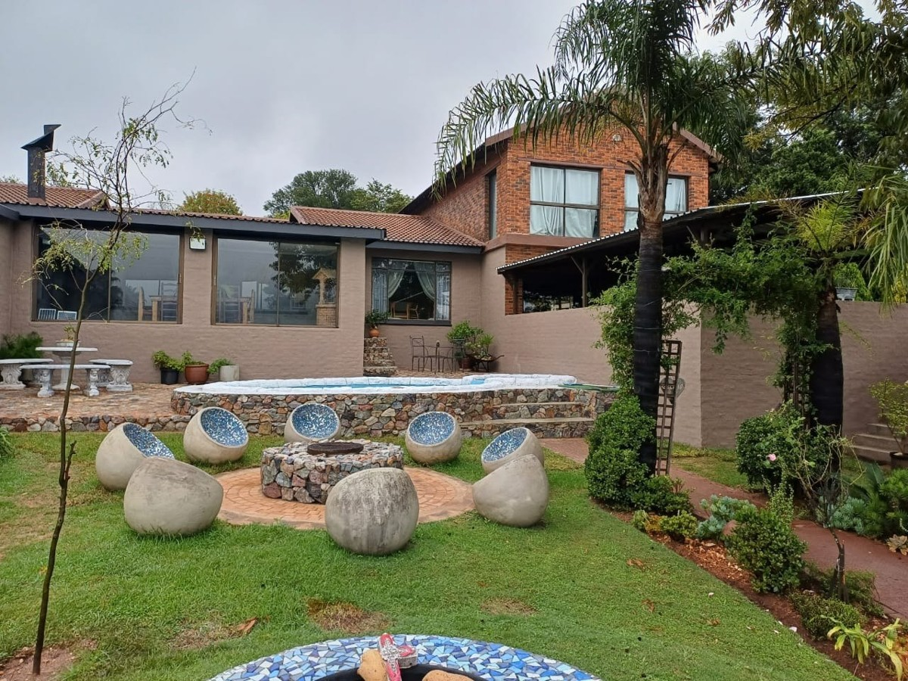
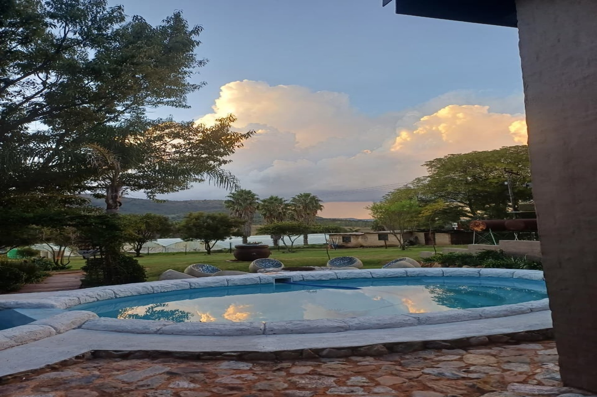
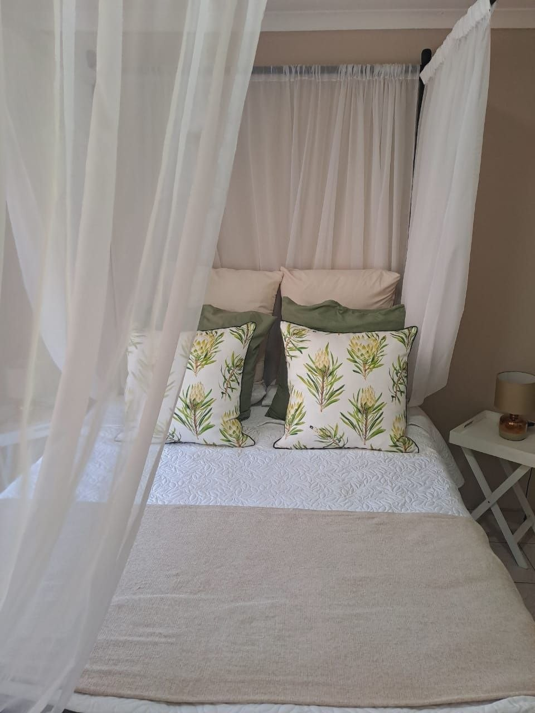
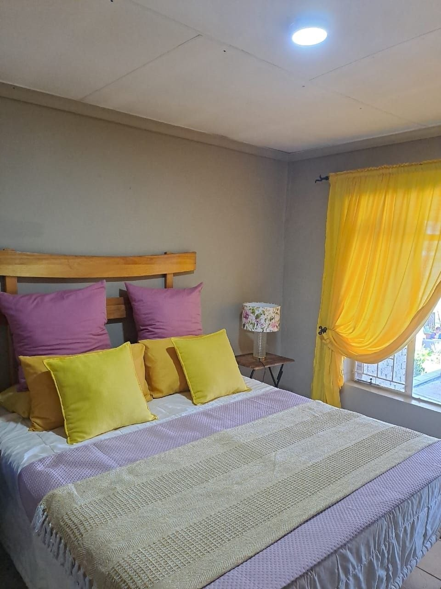
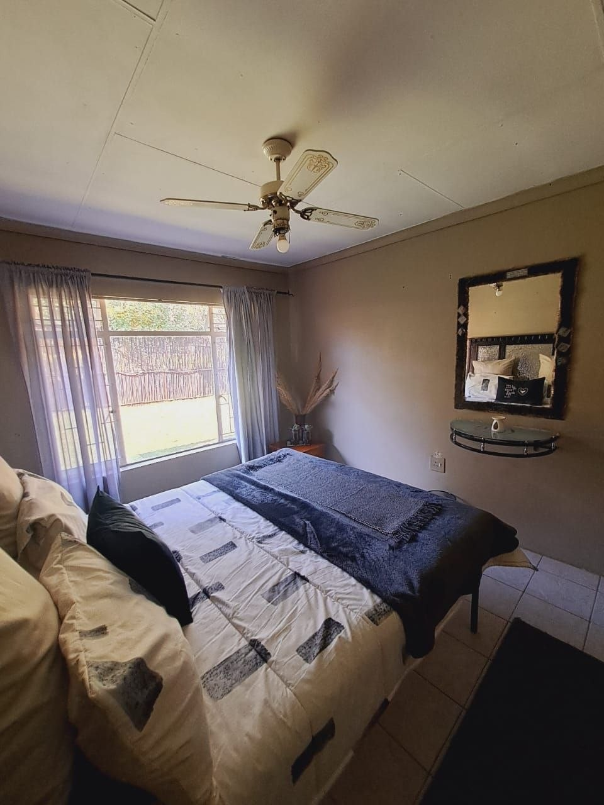

Pragtige omgewing
Oop ruimtes, natuurlike skoonheid en 'n atmosfeer wat terselfdertyd rustig en stylvol voel.
Plattelandse skoonheid. Warm gasvryheid. Onvergeetlike oomblikke.
The Village is 'n rustige en verwelkomende ruimte in Muldersdrift, geskep vir mense wat hou van skoonheid, atmosfeer en kosbare oomblikke wat in 'n plek vol warmte en bekoring gedeel word.
Welkom by The Village
Elke hoek is gerig op sagte detail, natuurlike lig en 'n gevoel van verfynde gemak wat mense onmiddellik laat ontspan.
Oor ons
The Village bied 'n verfynde plattelandse ervaring met uitnodigende omgewing, natuurlike bekoring, en 'n verwelkomende atmosfeer wat elke besoek besonders laat voel.
Of gaste kom vir verbinding, viering, of bloot om 'n rustige en pragtige ruimte te geniet, The Village is ontwerp om 'n blywende indruk te laat.
’n Sagte, stylvolle bestemming vir herinneringe wat langer bly.

Ervaring
Oop ruimtes, natuurlike skoonheid en 'n atmosfeer wat terselfdertyd rustig en stylvol voel.
’n Verwelkomende ruimte wat ontwerp is om gaste gemaklik, ontspanne en tuis te laat voel.
’n Bestemming wat pas by betekenisvolle byeenkomste, vieringe en spesiale gedeelde ervarings.
Galery
Hierdie ruimtes en besonderhede skep die warm, unieke atmosfeer wat The Village so besonders maak.

Besoek die volledige galery om deur al die foto's te blaai en die ruimte van nader te beleef.
Open die volledige galeryVerblyf
Die nuwe foto's wys dat The Village ook 'n warm, netjiese en uitnodigende verblyf-ervaring bied.

Kamers met sagte kleure, netjiese detail en 'n huislike gevoel wat rus en ontspanning bevorder.

Elke ruimte dra sy eie karakter en bekoring, met aandag aan gemak en 'n warm ontvangs.

'n Netjiese en ontspanne omgewing wat ideaal is vir gaste wat wil wegkom en asem skep.
Wat The Village bied
Uit die kamers en stylvolle detail is dit duidelik dat The Village ook 'n sagte, gemaklike verblyf-ervaring bied.
Met Resa as deel van die ruimte, bied The Village ook selfversorging, skoonheid en verwen-ervarings.
Van groepsaktiwiteite tot persoonlike detail, skep The Village ruimte vir meer as net besoek, maar ook belewenis.
Hoekom mense dit onthou
The Village staan uit omdat dit natuurlike skoonheid, 'n verwelkomende atmosfeer en 'n gevoel van kalmte kombineer wat gewone oomblikke in kosbare herinneringe verander.
Vir mense wat iets mooier, sagter en meer betekenisvol as net 'n venue soek.
Kontak
Om meer uit te vind, 'n vraag te vra, of navraag te doen oor die ruimte, kontak ons gerus en ons help met graagte.